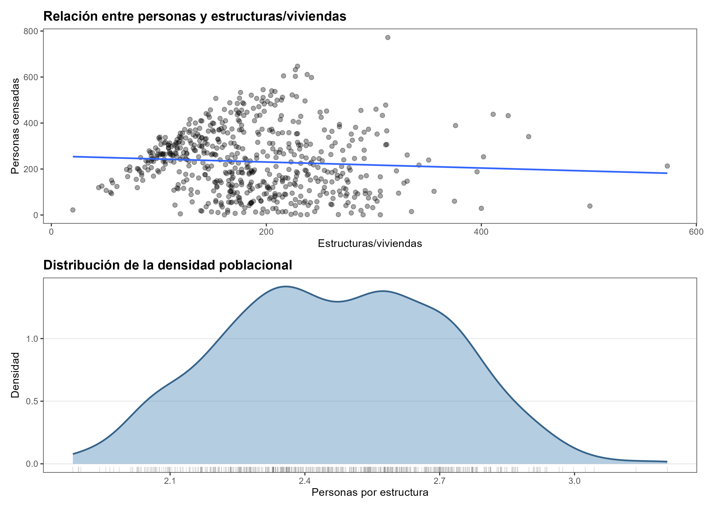
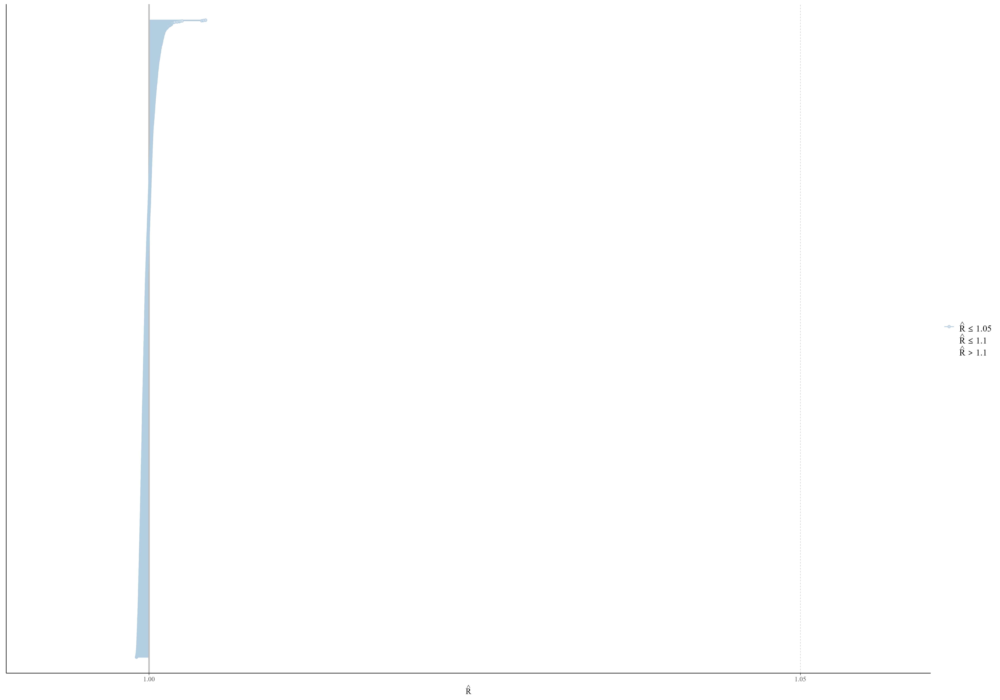
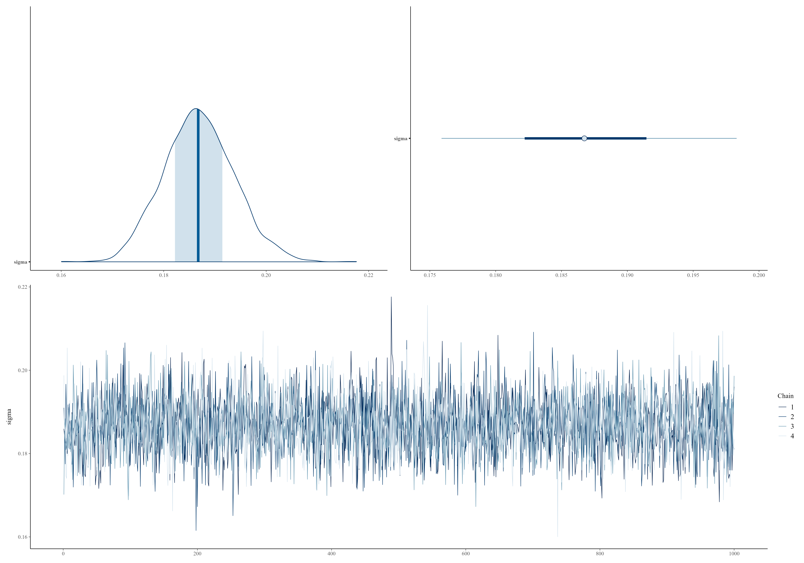
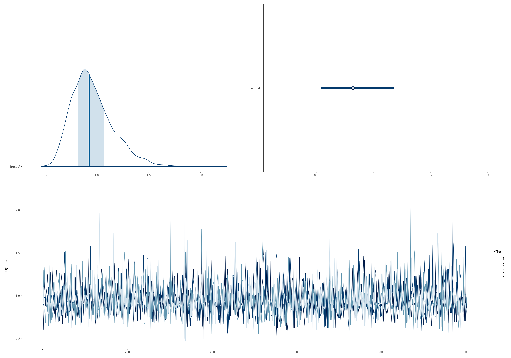
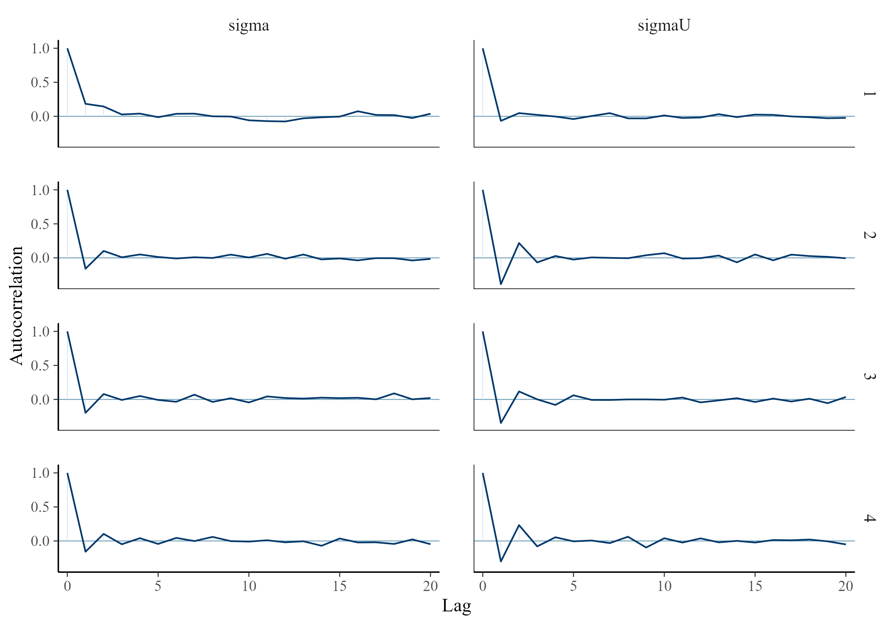
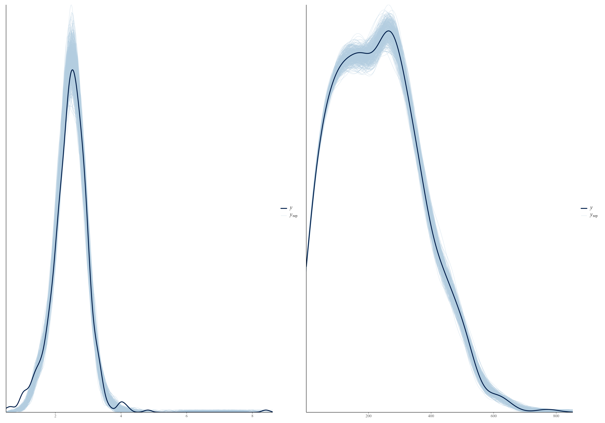

Capítulo 5 Inferencia Bayesiana e Implementación Computacional
El capítulo anterior estableció la especificación probabilística completa del modelo Poisson-lognormal: la distribución log-normal para la densidad latente de personas por estructura, la distribución de Poisson para los conteos observados, el predictor lineal con efectos fijos y aleatorios, y las distribuciones previas no informativas para todos los parámetros (Gelman et al. 2013). Esa especificación, derivada a partir del teorema de Bayes en la Sección 4.1.4, culmina en la distribución posterior conjunta de los parámetros estructurales y de las densidades latentes:
\[ p(\boldsymbol{\theta}, \boldsymbol{\delta} \mid \mathbf{Y}_{obs}) \;\propto\; p(\mathbf{Y}_{obs}, \boldsymbol{\delta} \mid \boldsymbol{\beta}, \boldsymbol{\gamma}, \sigma) \cdot p(\boldsymbol{\gamma} \mid \sigma_U) \cdot p(\boldsymbol{\beta}) \cdot p(\sigma) \cdot p(\sigma_U) \]
Disponer de esta expresión no equivale, sin embargo, a poder calcularla: la combinación entre Poisson y log-normal no tiene forma cerrada en ninguno de los parámetros, y la dimensión del espacio parametral —que incluye \(D_{obs}\) densidades latentes más los \(P + Q + 2\) parámetros estructurales— puede superar varios miles de dimensiones en aplicaciones censales reales.
El presente capítulo cierra esa brecha entre la especificación y la inferencia. La herramienta central es la simulación Monte Carlo por cadenas de Markov (MCMC), y dentro de ella el algoritmo de Monte Carlo Hamiltoniano (HMC) con el muestreador adaptativo NUTS (Hoffman y Gelman 2014), cuya implementación en Stan (Carpenter et al. 2017) permite obtener muestras de alta calidad de distribuciones posteriores complejas de manera eficiente. El capítulo se organiza en dos secciones: la primera describe los fundamentos del método de simulación y su implementación en Stan, ilustrada con las aplicaciones desarrolladas en cinco países del Caribe y América Latina en el marco de proyectos de asistencia técnica de CEPAL; la segunda describe el procedimiento para derivar, a partir de las muestras obtenidas, estimaciones puntuales, intervalos de credibilidad y agregaciones territoriales.
5.1 Métodos de simulación
Esta sección desarrolla, en cinco etapas, el aparato de simulación que permite aproximar la distribución posterior del modelo Poisson-lognormal: los fundamentos de la inferencia MCMC, el algoritmo de Monte Carlo Hamiltoniano y su variante adaptativa NUTS, la traducción del modelo a un programa Stan, la configuración práctica de cadenas e iteraciones, y las consideraciones de paralelización y eficiencia computacional que hacen viable ejecutar el modelo sobre segmentos censales de gran escala.
5.1.1 Cadenas de Markov Monte Carlo
En la mayoría de los modelos bayesianos la distribución posterior no puede obtenerse de forma analítica, por lo que es necesario aproximarla mediante métodos de simulación. Las cadenas de Markov Monte Carlo (MCMC) constituyen la familia de algoritmos más utilizada para este propósito. Su idea central consiste en generar una secuencia de valores de los parámetros cuya distribución, después de un número suficiente de iteraciones, coincide con la distribución posterior de interés (Tierney 1994).
Si la cadena ha alcanzado esta distribución estacionaria, las muestras generadas pueden utilizarse para estimar cualquier cantidad de interés, como medias, varianzas, intervalos de credibilidad o funciones de los parámetros. Para una función cualquiera \(g(\boldsymbol{\theta})\), su esperanza posterior puede aproximarse mediante el promedio de Monte Carlo
\[ \hat{g}_T = \frac{1}{T} \sum_{t=1}^{T} g\left(\boldsymbol{\theta}^{(t)}\right), \]
el cual converge a medida que aumenta el número de iteraciones. En la práctica, la precisión de esta aproximación depende no solo del tamaño de la muestra simulada, sino también del grado de dependencia entre observaciones consecutivas. Cuando las muestras presentan alta autocorrelación, la información efectiva contenida en la cadena disminuye y se requieren más iteraciones para obtener estimaciones precisas.
Durante varias décadas, los algoritmos de Metropolis-Hastings y sus variantes fueron el estándar para realizar inferencia bayesiana. Sin embargo, en modelos con un gran número de parámetros, como los modelos Poisson-lognormales utilizados para estimar población en miles de segmentos censales, estos métodos suelen explorar el espacio parametral de manera poco eficiente, produciendo cadenas altamente correlacionadas y tiempos de convergencia elevados. Para superar estas limitaciones surgió el Hamiltonian Monte Carlo (HMC), que utiliza información del gradiente de la distribución posterior para recorrer el espacio parametral de forma más rápida y eficiente (Neal 2011).
5.1.2 Monte Carlo Hamiltoniano y el algoritmo NUTS
La presente subsección formaliza el mecanismo mediante el cual HMC aprovecha el gradiente de la distribución posterior para guiar —en lugar de sortear al azar— su exploración del espacio parametral.
La idea proviene de la mecánica clásica, donde el movimiento de un sistema físico se describe a partir de su posición y su momento. En HMC, los parámetros del modelo \(\boldsymbol{\theta}\) se interpretan como la posición del sistema y se introduce un vector auxiliar de momento \(\boldsymbol{p}\). Ambos definen la función hamiltoniana,
\[ H(\boldsymbol{\theta}, \boldsymbol{p}) = -\log p(\boldsymbol{\theta}\mid\mathbf{Y}) + \frac{1}{2}\boldsymbol{p}^{\top}M^{-1}\boldsymbol{p}, \]
que combina la información de la distribución posterior con una cantidad auxiliar necesaria para simular la dinámica del sistema. Esta formulación permite recorrer el espacio parametral mediante trayectorias suaves, evitando el comportamiento errático característico de los métodos basados únicamente en propuestas aleatorias.
En la práctica, estas trayectorias se aproximan mediante el integrador leapfrog, que actualiza de forma alternada el momento y la posición utilizando el gradiente de la distribución posterior. Cada iteración del algoritmo realiza las siguientes actualizaciones:
\[ \boldsymbol{p}^{(t+\varepsilon/2)} = \boldsymbol{p}^{(t)} + \frac{\varepsilon}{2}\nabla_{\boldsymbol{\theta}} \log p(\boldsymbol{\theta}^{(t)}\mid\mathbf{Y}), \]
\[ \boldsymbol{\theta}^{(t+\varepsilon)} = \boldsymbol{\theta}^{(t)} + \varepsilon M^{-1}\boldsymbol{p}^{(t+\varepsilon/2)}, \]
\[ \boldsymbol{p}^{(t+\varepsilon)} = \boldsymbol{p}^{(t+\varepsilon/2)} + \frac{\varepsilon}{2}\nabla_{\boldsymbol{\theta}} \log p(\boldsymbol{\theta}^{(t+\varepsilon)}\mid\mathbf{Y}). \]
Estas actualizaciones permiten que la cadena explore la distribución posterior de forma eficiente, conservando una alta probabilidad de aceptación incluso en modelos con un gran número de parámetros. Una introducción accesible al funcionamiento de HMC puede encontrarse en Betancourt (2017), mientras que los fundamentos teóricos se desarrollan con mayor detalle en Neal (2011) y Gelman et al. (2013).
Aunque HMC mejora notablemente la eficiencia de los algoritmos MCMC, todavía requiere especificar el número de pasos que debe recorrer cada trayectoria. Elegir un valor demasiado pequeño produce una exploración limitada, mientras que uno demasiado grande incrementa el costo computacional sin aportar información adicional.
El algoritmo No-U-Turn Sampler (NUTS) (Hoffman y Gelman 2014), implementado por defecto en Stan, elimina esta dificultad ajustando automáticamente la longitud de cada trayectoria. El algoritmo detiene el recorrido cuando detecta que la trayectoria comienza a regresar sobre sí misma —un U-turn—, indicando que continuar la simulación dejaría de ser eficiente. Durante la fase inicial de calentamiento (warm-up), Stan también ajusta automáticamente el tamaño de paso utilizado por el integrador, reduciendo la necesidad de calibrar manualmente estos parámetros.
La combinación de HMC y NUTS ha convertido a Stan en una de las herramientas más eficientes para realizar inferencia bayesiana en modelos jerárquicos de alta dimensión. Esta capacidad resulta especialmente importante en los modelos Poisson-lognormales considerados en este libro, donde deben estimarse simultáneamente miles de efectos aleatorios asociados a segmentos censales. Gracias a esta eficiencia computacional, es posible obtener estimaciones estables y tiempos de ejecución razonables incluso en problemas de gran escala, como los abordados en los proyectos de estimación de población desarrollados por la CEPAL. La implementación práctica de estos modelos en Stan se presenta en la siguiente sección.
5.1.3 Implementación en Stan
Una vez descritos los principios de HMC y NUTS, es posible abordar su implementación computacional. En este libro se emplea Stan, un lenguaje de programación probabilística ampliamente utilizado para especificar modelos bayesianos y realizar inferencia mediante algoritmos de muestreo como HMC-NUTS (Carpenter et al. 2017). Stan compila los modelos a código C++ optimizado, lo que permite ajustar modelos complejos de manera eficiente. Desde R, la interacción con Stan se realiza mediante el paquete rstan (Stan Development Team 2023), que proporciona las herramientas necesarias para compilar el modelo, ejecutar el proceso de inferencia y recuperar las muestras de la distribución posterior.
Un programa en Stan se organiza en bloques, cada uno con una función específica dentro del proceso de inferencia. El bloque data declara la información conocida que se suministra desde R; parameters define los parámetros desconocidos del modelo; transformed parameters calcula cantidades deterministas derivadas de esos parámetros; model especifica la verosimilitud y las distribuciones previas que definen la distribución posterior; y generated quantities calcula cantidades derivadas de las muestras posteriores, como predicciones para nuevas observaciones. Esta secuencia no es arbitraria: reproduce, en el mismo orden, la construcción del modelo presentada en el capítulo anterior, desde los datos observados hasta las predicciones derivadas de la distribución posterior.
El Código 5.1 presenta la implementación en Stan del modelo Poisson-lognormal utilizada en las asistencias técnicas de la CEPAL para la estimación de población. Por su extensión, el programa se muestra en dos partes: primero los bloques data, parameters, transformed parameters y model, que especifican el modelo y su ajuste; luego, en el Código 5.2, el bloque generated quantities, que produce las predicciones y la log-verosimilitud puntual. Ambos fragmentos forman un único programa Stan.
Código 5.1 (Modelo Poisson-lognormal en Stan: especificación y ajuste)
data {
int<lower=1> D_obs; // Segmentos observados en el censo
int<lower=1> D_tot; // Total de segmentos en el país
int<lower=1> P; // Número de covariables
int<lower=1> Q; // Número de efectos aleatorios
array[D_obs] int<lower=0> Y_obs; // Conteos poblacionales observados
array[D_obs] int<lower=0> V_obs; // Estructuras en segmentos observados
array[D_tot] int<lower=0> V_tot; // Estructuras en todos los segmentos
matrix[D_obs, P] X_obs; // Covariables en segmentos observados
matrix[D_tot, P] X_tot; // Covariables en todos los segmentos
matrix[D_obs, Q] Z_obs; // Indicadores de efectos aleatorios (observadas)
matrix[D_tot, Q] Z_tot; // Indicadores de efectos aleatorios (todas)
}
parameters {
vector[P] beta; // Coeficientes de efectos fijos
vector[Q] gamma; // Coeficientes de efectos aleatorios
real<lower=0> sigma; // Escala de la distribución log-normal
real<lower=0> sigmaU; // Escala de los efectos aleatorios
vector<lower=0>[D_obs] densidad; // Densidades latentes en segmentos observados
}
transformed parameters {
vector[D_obs] lp; // Predictor lineal
vector<lower=0>[D_obs] lambda; // Parámetro Poisson
lp = X_obs * beta + Z_obs * gamma;
for (d in 1:D_obs)
lambda[d] = fmin(fmax(1, densidad[d] * V_obs[d]), 10000000);
}
model {
// Distribuciones previas
beta ~ normal(0, 100);
gamma ~ normal(0, sigmaU);
sigma ~ cauchy(0, 2.5);
sigmaU ~ normal(0, 1);
// Verosimilitud
Y_obs ~ poisson(lambda);
densidad ~ lognormal(lp, sigma);
}El Código 5.2 continúa el mismo programa con el bloque generated quantities, que reutiliza las muestras posteriores de beta, gamma y sigma para generar, sobre la totalidad de los D_tot segmentos del país, la densidad predictiva y el conteo poblacional asociado, además de la log-verosimilitud puntual de los segmentos observados:
Código 5.2 (Modelo Poisson-lognormal en Stan: cantidades generadas)
generated quantities {
vector[D_tot] lp_tot;
array[D_tot] real<lower=0> densidad_hat;
vector<lower=0>[D_tot] lambda2;
array[D_tot] int<lower=0> Y_tot;
vector[D_obs] log_lik; // Log-verosimilitud puntual (LOO/WAIC)
lp_tot = X_tot * beta + Z_tot * gamma;
for (d in 1:D_tot) {
densidad_hat[d] = lognormal_rng(lp_tot[d], sigma);
lambda2[d] = fmin(fmax(1, densidad_hat[d] * V_tot[d]), 10000000);
Y_tot[d] = poisson_rng(lambda2[d]);
}
for (d in 1:D_obs)
log_lik[d] = poisson_lpmf(Y_obs[d] | lambda[d]);
}La Tabla 5.1 traduce, símbolo por símbolo, la notación matemática del capítulo anterior a los objetos declarados en el código, indicando en qué bloque aparece cada uno; sirve como referencia para el recorrido bloque por bloque que sigue, de modo que este último pueda centrarse en las decisiones de implementación y no en repetir esa correspondencia:
| Notación del capítulo anterior | Objeto en Stan | Bloque |
|---|---|---|
| \(D_{obs}\), \(D_{tot}\) (segmentos observados y totales, Sección 4.1.1) | D_obs, D_tot |
data |
| \(P\), \(Q\) (número de covariables y de unidades territoriales) | P, Q |
data |
| \(Y_i\), \(i\in\mathcal{S}_{obs}\) | Y_obs |
data |
| \(V_i\) (offset de estructuras, Sección 4.2.4) | V_obs, V_tot |
data |
| \(\mathbf{x}_i^{\top}\), \(\mathbf{z}_i^{\top}\) (filas de \(\mathbf{X}_{obs}\), \(\mathbf{Z}_{obs}\)) | X_obs, X_tot, Z_obs, Z_tot |
data |
| \(\boldsymbol{\beta}\), \(\boldsymbol{\gamma}\), \(\sigma\), \(\sigma_U\) | beta, gamma, sigma, sigmaU |
parameters |
| \(\delta_i\), \(i\in\mathcal{S}_{obs}\) (Sección 4.1.1) | densidad |
parameters |
| \(\mu_i = \mathbf{x}_i^{\top}\boldsymbol{\beta} + \mathbf{z}_i^{\top}\boldsymbol{\gamma}\) | lp, lp_tot |
transformed parameters, generated quantities |
| \(\lambda_i = \delta_i V_i\) | lambda, lambda2 |
transformed parameters, generated quantities |
| \(\beta_k\sim\mathcal{N}(0,\tau_\beta^2)\), \(\gamma_j\sim\mathcal{N}(0,\sigma_U^2)\), \(\sigma\sim\text{Cauchy}^+(0,\tau_\sigma)\), \(\sigma_U\sim\mathcal{N}^+(0,\tau_U^2)\) | beta ~ normal(0,100), gamma ~ normal(0,sigmaU), sigma ~ cauchy(0,2.5), sigmaU ~ normal(0,1) |
model |
| \(Y_i\mid\delta_i,V_i\sim\text{Poisson}(\delta_iV_i)\) | Y_obs ~ poisson(lambda) |
model |
| \(\delta_i\mid\mu_i,\sigma\sim\text{LogNormal}(\mu_i,\sigma)\) | densidad ~ lognormal(lp, sigma) |
model |
| \(\tilde{\delta}_i^{(t)}\sim\text{LogNormal}(\mu_i^{(t)},\sigma^{(t)})\), \(\tilde{Y}_i^{(t)}\sim\text{Poisson}(\tilde{\delta}_i^{(t)}V_i)\) | densidad_hat, Y_tot |
generated quantities |
Más allá de esa correspondencia literal, cada bloque involucra decisiones de implementación que la tabla, por su naturaleza, no puede capturar. El bloque data declara dos versiones de cada matriz de diseño y del conteo de estructuras —con sufijo _obs para los segmentos que aportan información a la verosimilitud y _tot para la totalidad del país—, lo que permite ajustar el modelo y generar predicciones fuera de muestra dentro de un único programa, sin duplicar la especificación matemática. En parameters, la densidad latente densidad se declara como un vector de longitud D_obs —un parámetro propio por segmento observado, y no un efecto compartido—, reflejando su condición de cantidad latente individual; la restricción lower=0, aplicada también a sigma y sigmaU, hace que Stan muestree internamente en la escala logarítmica y aplique de forma automática la transformación correspondiente, sin intervención adicional del modelador.
En transformed parameters, el producto matricial X_obs * beta + Z_obs * gamma evalúa el predictor lineal \(\mu_i\) para todos los segmentos observados en una sola operación vectorizada, y la intensidad Poisson se construye como \(\lambda_i=\delta_iV_i\), a partir de la identidad \(\log(\lambda_i)=\log(\delta_i)+\log(V_i)\) derivada en la Sección 4.2.4. La función fmin(fmax(1, ...), 10000000) es, en cambio, un resguardo puramente numérico —evita intensidades menores que uno y desbordamientos aritméticos en segmentos con predictor lineal muy alto— y no debe confundirse con la restricción demográfica \(\tilde{\delta}_i=\min(\delta_i^*,\delta_{\max})\) de esa misma sección: esta última, más estricta y basada en el conocimiento experto del rango plausible de ocupación habitacional, se aplicaría como un paso adicional sobre densidad_hat en generated quantities, si el país en cuestión lo requiere.
El bloque model implementa la especificación probabilística del modelo mediante las distribuciones previas y la función de verosimilitud. Las distribuciones previas constituyen la implementación directa de las definidas en la Sección 4.1.3, utilizando los hiperparámetros adoptados para este modelo. La restricción lower=0 sobre sigma, combinada con la instrucción sigma ~ cauchy(0, 2.5), garantiza que la distribución previa corresponda a una Cauchy positiva. Las dos líneas de verosimilitud, Y_obs ~ poisson(lambda) y densidad ~ lognormal(lp, sigma), reproducen conjuntamente la verosimilitud de la Ecuación (4.1), siguiendo las recomendaciones de Gelman et al. (2013) y McElreath (2020) para modelos jerárquicos.
El bloque generated quantities repite, para cada muestra posterior y para la totalidad de los segmentos del país, el mismo mecanismo generativo del modelo —predictor lineal, densidad log-normal y conteo Poisson—, lo que produce directamente la distribución predictiva posterior descrita al cierre de la Sección 4.1.4, sin requerir post-procesamiento adicional. El vector log_lik, en cambio, no forma parte de la especificación del modelo: es una cantidad puramente diagnóstica —\(\log p(Y_i \mid \delta_i, V_i)\) para cada \(i \in \mathcal{S}_{obs}\)—, calculada solo para los segmentos observados y reservada como insumo para los criterios LOO y WAIC retomados hacia el final de este capítulo.
5.1.4 Configuración de cadenas, muestras e iteraciones
Con el programa Stan completamente especificado, resta decidir cómo se ejecuta. La ejecución del modelo desde R requiere configurar cuatro parámetros principales: el número de cadenas, el número de iteraciones totales, el número de iteraciones de calentamiento y los parámetros de control del algoritmo (Gelman et al. 2013, cap. 11), como en el Código 5.3:
Código 5.3 (Ajuste del modelo Poisson-lognormal con rstan)
library(rstan)
library(bayesplot)
library(loo)
# Habilitar paralelización y caché de modelos compilados
options(mc.cores = parallel::detectCores())
rstan::rstan_options(auto_write = TRUE)
# Ajustar el modelo
stan_model <- rstan::stan(
file = "/Data/rutinas/Stan/Modelo_ECLAC.stan",
data = list_par,
iter = 2000,
warmup = 1500,
chains = 4,
control = list(max_treedepth = 15)
)El parámetro iter fija el número total de iteraciones por cadena, incluyendo el calentamiento. De las 2 000 iteraciones totales por cadena, 1 500 corresponden a la fase de calentamiento y 500 a la fase de inferencia. Con 4 cadenas en paralelo, el conjunto de muestras útiles comprende \(4 \times 500 = 2\,000\) muestras de la distribución posterior. En aplicaciones censales con alta dimensión latente —\(D_{obs}\) del orden de miles de segmentos— esta configuración es un punto de partida razonable que puede refinarse en función de los diagnósticos de convergencia descritos en las Secciones 6.1.1 y 6.1.2 del capítulo siguiente.
El uso de múltiples cadenas independientes, iniciadas desde puntos dispersos del espacio paramétrico, es una práctica estándar en inferencia MCMC (Gelman y Rubin 1992). La comparación entre cadenas permite detectar problemas de convergencia que una cadena única no puede revelar: si todas las cadenas convergen a la misma región de alta densidad posterior, existe mayor confianza en que están explorando adecuadamente la distribución objetivo. El diagnóstico formal basado en la comparación de varianza entre cadenas e intra-cadena, el estadístico \(\hat{R}\) (Gelman y Rubin 1992; Vehtari et al. 2021), se reporta de forma sistemática junto con el tamaño efectivo de muestra.
La fase de calentamiento, ya mencionada como uno de los dos componentes de iter, cumple en realidad tres funciones en Stan. Primera: el algoritmo NUTS ajusta adaptativamente el tamaño de paso \(\varepsilon\) para alcanzar la tasa de aceptación objetivo. Segunda: se estima la matriz de masa \(M\) que actúa como métrica del espacio parametral; Stan utiliza por defecto una métrica euclidiana diagonal cuyos elementos se estiman a partir de la varianza empírica de las muestras de calentamiento. Tercera: la cadena se aproxima a la región de alta densidad posterior, descartando las muestras iniciales que pueden estar lejos del modo. Las muestras de la fase de calentamiento no son utilizables para inferencia porque los hiperparámetros del algoritmo aún están siendo ajustados.
El parámetro max_treedepth = 15 controla la profundidad máxima del árbol binomial que construye NUTS en cada iteración. Un árbol de profundidad \(L\) equivale a \(2^L\) evaluaciones del leapfrog, lo que permite trayectorias de gran alcance en distribuciones posteriores con geometría compleja. El valor por defecto en Stan es 10; aumentarlo a 15 es recomendable en modelos con alta dimensionalidad latente o correlaciones posteriores fuertes, al costo de mayor tiempo de cómputo por iteración. Si durante la ejecución Stan registra advertencias de tipo maximum treedepth exceeded, se debe aumentar este parámetro o revisar la parametrización del modelo.
5.1.5 Paralelización y eficiencia computacional
Más allá de la configuración estadística de las cadenas, la ejecución práctica del modelo sobre datos censales de gran escala exige atender también los aspectos computacionales del ajuste: el aprovechamiento de los núcleos de procesamiento disponibles y el manejo de la memoria que generan las predicciones fuera de muestra. La línea options(mc.cores = parallel::detectCores()) del Código 5.3 se configura la ejecución de las cuatro cadenas en paralelo, utilizando tantos núcleos del procesador como estén disponibles. La opción rstan_options(auto_write = TRUE) permite que Stan almacene en disco el modelo compilado en C++, de modo que sucesivas ejecuciones del mismo modelo reutilizan el código compilado y evitan el tiempo de compilación —que puede ser de 30 a 90 segundos según la complejidad del modelo— en cada llamada a stan().
En aplicaciones con \(D_{obs}\) del orden de varios miles de segmentos, el costo computacional dominante por iteración proviene de la evaluación del gradiente del logaritmo de la distribución conjunta respecto a los parámetros latentes \(\boldsymbol{\delta}\). Stan calcula estos gradientes mediante diferenciación automática sobre el grafo computacional del modelo (Carpenter et al. 2017), lo que garantiza gradientes exactos al costo de un factor constante —típicamente entre 2 y 5— sobre el tiempo de evaluación de la log-densidad.
El manejo de memoria es relevante, en particular, cuando el bloque generated quantities genera matrices de predicción de dimensión \(D_{tot} \times T\). Por esa razón es recomendable guardar el objeto Stan en disco inmediatamente tras la ejecución, evitando así recomputaciones costosas en sesiones de análisis posteriores, como en el Código 5.4:
Código 5.4 (Guardar y recuperar el objeto Stan ajustado)
Con el objeto ajustado disponible en disco se cierra el ciclo de estimación propiamente dicho: se cuenta con muestras válidas de la distribución posterior del modelo Poisson-lognormal, obtenidas mediante HMC-NUTS y almacenadas de forma persistente. Resta traducir esas muestras en las cantidades que efectivamente interesan a la producción estadística oficial —estimaciones puntuales, intervalos de credibilidad y totales agregados por unidad geográfica— y verificar que el ajuste sea adecuado para ese propósito. Ambas tareas se desarrollan en la sección siguiente.
5.2 Distribución posterior y estimaciones
Esta sección recorre el camino que va de las muestras crudas generadas por Stan a las cifras que un instituto nacional de estadística puede publicar. El recorrido comprende seis etapas: la extracción del resumen posterior estándar, el acceso a las muestras brutas para calcular intervalos de credibilidad, la construcción de estimaciones puntuales a nivel de segmento censal que respetan el estado de cobertura del operativo, la agregación coherente a niveles geográficos superiores, la verificación predictiva posterior del ajuste y, por último, los criterios de información empleados para comparar especificaciones alternativas del modelo.
5.2.1 Estimaciones puntuales y resumen posterior
Una vez finalizado el proceso de inferencia, el objeto stan_model contiene las muestras de la distribución posterior de todos los parámetros y cantidades generadas por el modelo. A partir de estas muestras es posible obtener estimaciones puntuales, intervalos de credibilidad y diagnósticos de convergencia mediante la función summary(), como se muestra en el Código 5.5.
Código 5.5 (Resumen posterior de los parámetros)
# Resumen de todos los parámetros
params <- summary(stan_model)$summary
# Resumen específico de parámetros de interés
densidad_obs <- summary(stan_model, pars = "densidad")$summary
densidad_pred <- summary(stan_model, pars = "densidad_hat")$summary
Y_tot_pred <- summary(stan_model, pars = "Y_tot")$summaryLa función summary() resume tanto los parámetros del modelo como las cantidades generadas durante el proceso de inferencia. Cada fila corresponde a un parámetro o cantidad derivada, mientras que las columnas contienen las principales estadísticas descriptivas de la distribución posterior. La Tabla 5.2 resume la interpretación de cada una de ellas.
| Columna | Descripción |
|---|---|
mean |
Esperanza de la distribución posterior, utilizada habitualmente como estimación puntual. |
se_mean |
Error estándar de Monte Carlo asociado a la estimación de la media posterior. |
sd |
Desviación estándar de la distribución posterior. |
2.5%, 25%, 75%, 97.5% |
Percentiles de la distribución posterior; los percentiles 2.5% y 97.5% delimitan el intervalo de credibilidad del 95%. |
50% |
Mediana de la distribución posterior. |
n_eff |
Tamaño efectivo de muestra. |
Rhat |
Estadístico de convergencia potencial \(\hat{R}\). |
En el contexto de los modelos de población desarrollados en este libro, las cantidades de mayor interés son las densidades poblacionales y los conteos poblacionales predichos para cada segmento censal. La media posterior constituye el estimador de Bayes bajo pérdida cuadrática y, por tanto, suele adoptarse como estimación puntual cuando el objetivo es producir estimaciones oficiales o realizar agregaciones territoriales. La mediana posterior, por su parte, es el estimador de Bayes bajo pérdida absoluta y puede resultar preferible cuando la distribución posterior presenta una marcada asimetría o colas pesadas (Gelman et al. 2013).
La comparación entre la media y la mediana proporciona una medida sencilla del grado de asimetría de la distribución posterior. Cuando ambas estimaciones son similares, la distribución posterior suele ser aproximadamente simétrica; en cambio, diferencias apreciables indican distribuciones asimétricas y conviene documentarlas, especialmente si las estimaciones serán utilizadas para producir indicadores oficiales o agregaciones territoriales.
Además de resumir la distribución posterior mediante estimaciones puntuales e intervalos de credibilidad, es indispensable verificar la calidad del proceso de inferencia. Para ello se utilizan los estadísticos \(\hat{R}\) y el tamaño efectivo de muestra (\(n_{\mathrm{eff}}\)), que permiten evaluar, respectivamente, la convergencia de las cadenas de Markov y la cantidad de información efectiva contenida en las muestras posteriores. Su interpretación se desarrolla en las Secciones 6.1.1 y 6.1.2 del capítulo siguiente.
5.2.2 Extracción de muestras e intervalos de credibilidad
El resumen posterior recién descrito reporta estadísticas marginales por parámetro, pero las agregaciones territoriales que se desarrollan más adelante en este capítulo requieren operar directamente sobre las muestras conjuntas, no sobre sus resúmenes. La función rstan::extract() extrae las muestras brutas de la distribución posterior en forma de arreglos, lo que permite calcular cualquier funcional que no esté incluido en el resumen estándar, tal como se ilustra en el Código 5.6:
Código 5.6 (Extracción de muestras posteriores)
# Extraer muestras posteriores de los parámetros de interés
posterior_samples <- rstan::extract(
stan_model,
pars = c("densidad", "Y_tot", "densidad_hat")
)
# densidad_post: matriz de dimensión T × D_obs
densidad_post <- posterior_samples$densidad
# Y_tot_samp: matriz de dimensión T × D_tot
Y_tot_samp <- posterior_samples$Y_totEl intervalo de credibilidad al 95% para el conteo del segmento \(d\) se calcula como:
\[ \text{IC}_{95\%}(Y_d) = \left[F_{Y_d}^{-1}(0{,}025),\; F_{Y_d}^{-1}(0{,}975)\right] \]
donde \(F_{Y_d}^{-1}\) denota el cuantil empírico de las \(T\) muestras de Y_tot_samp[, d]. A diferencia de los intervalos de confianza frecuentistas, el intervalo de credibilidad tiene una interpretación probabilística directa: dada la información observada y el modelo, la probabilidad posterior de que \(Y_d\) caiga en ese intervalo es 0,95 (Gelman et al. 2013). Esta propiedad facilita la comunicación de la incertidumbre a usuarios institucionales no especializados en estadística.
5.2.3 Estimaciones a nivel de segmento censal
El mismo mecanismo de extracción de muestras permite ir un paso más allá del intervalo de credibilidad genérico y construir la estimación final de población que efectivamente se reporta en la producción estadística, aplicando directamente la clasificación de segmentos según su nivel de cobertura introducida en la Sección 3.2.1. El objeto data_model es el data frame de segmentos censales construido durante la preparación de insumos (Capítulo 3), con una fila por segmento; incluye el identificador operativo del segmento (ED, enumeration district), el conteo de personas efectivamente registrado en el censo (T_pers) y el estado de cobertura del segmento (Status), que toma directamente los tres valores de esa clasificación: "Completa" (\(\hat{c}_i = 1\)), "Nula" (\(\hat{c}_i = 0\)) y "Parcial" (\(0 < \hat{c}_i < 1\)), como se muestra en el Código 5.7:
Código 5.7 (Extracción de las muestras predictivas por segmento censal)
library(tidyverse)
# Extraer predicciones como data frame
df_y_pred <- data.frame(t(Y_tot_samp))
colnames(df_y_pred) <- paste0("pred_cont_", seq_len(ncol(df_y_pred)))
# Unir con metadatos del segmento
df_y_pred <- data_model %>%
select(ED:Status) %>%
bind_cols(df_y_pred)
pred_cols <- grep("^pred_cont_", names(df_y_pred), value = TRUE)Las \(T\) columnas de pred_cols son la predicción incondicional del modelo para cada segmento, obtenida únicamente a partir de las covariables, sin incorporar todavía el conteo censal observado ni el estado de cobertura. Resumirlas directamente —o agregarlas tal cual en la sección siguiente— ignoraría que en los segmentos con cobertura completa el conteo verdadero ya se conoce con certeza, y sobreestimaría artificialmente la incertidumbre de la estimación final. El Código 5.8 corrige esto muestra por muestra, aplicando en cada una de las \(T\) columnas la regla que corresponde al estado de cobertura del segmento:
Código 5.8 (Corrección de las muestras posteriores según el estado de cobertura)
# Corregir cada muestra posterior según el estado de cobertura del segmento
df_y_final <- df_y_pred %>%
mutate(
across(
all_of(pred_cols),
~ case_when(
# Cobertura completa: el conteo censal es exacto en cada muestra
Status == "Completa" ~ T_pers,
# Cobertura nula: se conserva íntegramente la predicción del modelo
Status == "Nula" ~ .x,
# Cobertura parcial: dominancia entre el conteo observado y la
# predicción del modelo, aplicada en cada muestra.
Status == "Parcial" ~ pmax(T_pers, .x)
)
)
)
# Estimación puntual e intervalo de credibilidad ya corregidos por cobertura
estimaciones_segmento <- df_y_final %>%
rowwise() %>%
mutate(
pob_final = mean(c_across(all_of(pred_cols))),
pob_li_95 = quantile(c_across(all_of(pred_cols)), 0.025),
pob_ls_95 = quantile(c_across(all_of(pred_cols)), 0.975)
) %>%
ungroup()Esta corrección se aplica muestra por muestra, no solo sobre la estimación puntual, y refleja la naturaleza unidireccional del error de cobertura: la omisión genera subenumeración, no sobreconteo. Los segmentos con cobertura completa quedan sin incertidumbre en df_y_final —pob_li_95 y pob_ls_95 coinciden con T_pers—, porque su conteo es exacto en las \(T\) muestras; los de cobertura nula conservan íntegramente la incertidumbre predictiva del modelo; y los de cobertura parcial retienen, en cada muestra, el mayor valor entre el conteo observado y la predicción. Esta regla de dominancia, propuesta en este libro como solución operativa al problema de cobertura parcial, impone en cada muestra posterior la restricción lógica de que la estimación final de un segmento no puede ser inferior al conteo que el censo ya registró directamente en él, dado el carácter unidireccional del error de cobertura recién señalado. Es df_y_final, y no df_y_pred, el objeto que debe agregarse hacia niveles geográficos superiores: agregar directamente las predicciones brutas ignoraría el estado de cobertura de cada segmento y sobreestimaría la incertidumbre en todos los niveles de agregación.
5.2.4 Agregación a niveles geográficos superiores
Resuelta la estimación en la unidad mínima de análisis —el segmento censal—, el paso siguiente consiste en agregar esas estimaciones hacia los niveles geográficos que efectivamente se publican: municipios, provincias o el total nacional. La distribución posterior del total de población en cualquier unidad geográfica de nivel superior se obtiene sumando, para cada una de las \(T\) muestras, los conteos ya corregidos por estado de cobertura (df_y_final, Código 5.8) de los segmentos que la componen; agregar en su lugar las columnas pred_cols de df_y_pred, sin corregir, ignoraría que los segmentos con cobertura completa no aportan incertidumbre y sobreestimaría el intervalo resultante en cualquier nivel de agregación. Esta propiedad de coherencia por agregación es una consecuencia directa de ajustar un único modelo conjunto sobre todos los segmentos censales: como cualquier nivel geográfico se calcula sumando las mismas \(T\) muestras posteriores de sus segmentos componentes, los totales de distintos niveles son automáticamente consistentes entre sí, sin necesidad de un paso adicional de conciliación. A continuación se ilustra la agregación en dos niveles: primero hacia DAM (División Administrativa Mayor), la unidad administrativa de nivel superior utilizada en este ejemplo —el mismo procedimiento se aplicaría agrupando por cualquier otra división administrativa disponible, como la división administrativa menor, un distrito o una provincia—, y luego hacia el total nacional.
Código 5.9 (Agregación territorial a nivel de DAM con intervalos de credibilidad)
# Agregación a nivel de DAM con intervalo de credibilidad
estimaciones_dam <- df_y_final %>%
group_by(DAM) %>%
summarise(
across(all_of(pred_cols), sum, na.rm = TRUE),
.groups = "drop"
) %>%
rowwise() %>%
mutate(
tot_pob_media = mean(c_across(all_of(pred_cols))),
tot_pob_sd = sd(c_across(all_of(pred_cols))),
tot_pob_li_95 = quantile(c_across(all_of(pred_cols)), 0.025),
tot_pob_ls_95 = quantile(c_across(all_of(pred_cols)), 0.975),
len_ic = tot_pob_ls_95 - tot_pob_li_95
) %>%
ungroup()El Código 5.9 opera en dos etapas. La primera, group_by(DAM) %>% summarise(across(all_of(pred_cols), sum)), colapsa los segmentos dentro de cada DAM: para cada una de las \(T\) columnas de pred_cols suma los valores de todos los segmentos que pertenecen a esa unidad, de modo que el resultado conserva las \(T\) muestras posteriores, ahora agregadas a nivel de DAM en lugar de segmento. La segunda etapa, con rowwise() y c_across(), resume esas \(T\) muestras —una fila por DAM— en un punto y un intervalo de credibilidad, exactamente como se hizo antes por segmento en el Código 5.8.
Código 5.10 (Agregación territorial a nivel nacional con intervalo de credibilidad)
# Total nacional con intervalo de credibilidad
estimacion_nacional <- df_y_final %>%
summarise(across(all_of(pred_cols), sum, na.rm = TRUE)) %>%
pivot_longer(everything(), names_to = "iteracion", values_to = "total_pob") %>%
summarise(
media = mean(total_pob),
sd = sd(total_pob),
li_95 = quantile(total_pob, 0.025),
ls_95 = quantile(total_pob, 0.975),
mediana = median(total_pob)
)El total nacional es el caso límite en que toda la agregación anterior colapsa en una única unidad geográfica, y el Código 5.10 se simplifica en consecuencia: al omitir group_by(), el primer summarise(across(...)) produce una sola fila con las \(T\) sumas nacionales, una por columna de pred_cols. Con una única fila ya no tiene sentido resumir por rowwise() y c_across() como en el caso de la DAM; en su lugar, pivot_longer() convierte esas \(T\) columnas en \(T\) filas de una sola variable (total_pob), sobre la cual el summarise() final calcula media, desviación estándar, mediana y los percentiles del intervalo de credibilidad con las funciones estándar de R, sin necesidad de c_across().
La amplitud del intervalo de credibilidad del total nacional refleja simultáneamente la incertidumbre sobre los parámetros del modelo y la variabilidad estocástica del proceso de Poisson en cada segmento. En aplicaciones prácticas, este intervalo es usualmente estrecho en comparación con el total estimado porque la mayor parte de la variabilidad individual se cancela en la suma; pero puede ser sustancialmente amplio para unidades geográficas con pocos segmentos y baja cobertura censal.
5.2.5 Verificación predictiva posterior
Las estimaciones puntuales y sus intervalos de credibilidad, calculados hasta aquí en todos los niveles de agregación, son tan confiables como lo sea el modelo del que provienen. Antes de dar por válidas estas cifras corresponde, entonces, verificar la calidad del ajuste comparando los datos observados con réplicas generadas por el propio modelo (Gabry et al. 2019). En el contexto del modelo Poisson-lognormal, es más informativo verificar la capacidad predictiva sobre la densidad \(\delta_i = Y_i/V_i\) que directamente sobre los conteos, ya que la densidad es la cantidad central del modelo y su distribución no depende del número de estructuras. El Código 5.11 calcula ambas verificaciones —densidad y conteos brutos— a partir del mismo subconjunto de réplicas posteriores:
Código 5.11 (Verificación predictiva posterior de la densidad)
# Subconjunto aleatorio de muestras de densidad
densidad_post <- posterior_samples$densidad
idx_muestra <- sample(nrow(densidad_post), 500)
densidad_rep <- densidad_post[idx_muestra, ]
# Gráfico de verificación predictiva posterior
ppc_dens <- bayesplot::ppc_dens_overlay(
y = as.numeric(Y_obs / V_obs),
yrep = densidad_rep
)
# Verificación sobre los conteos brutos
ppc_pers <- bayesplot::ppc_dens_overlay(
y = as.numeric(Y_obs),
yrep = t(t(densidad_rep) * V_obs)
)
ppc_dens | ppc_persEn este gráfico (Gabry y Mahr 2022), la línea sólida corresponde a la distribución empírica de los datos observados y las líneas semitransparentes representan las distribuciones predictivas generadas por las muestras posteriores; ppc_dens compara ambas en la escala de densidad y ppc_pers, reponderando cada réplica por el número de estructuras observado (V_obs), en la escala de conteos brutos. Un modelo bien especificado produce líneas predictivas que envuelven razonablemente bien la distribución observada en ambas escalas, sin exceso ni defecto sistemático; desviaciones importantes —por ejemplo, réplicas sistemáticamente más concentradas o más dispersas que los datos observados— señalan limitaciones del modelo que pueden orientar la reformulación del predictor lineal o el cambio de la distribución de la densidad latente (Gabry et al. 2019).
La Sección 5.3, al cierre de este capítulo, aplica este mismo código sobre un ajuste con datos reales y muestra su salida efectiva.
5.2.6 Criterios de información LOO y WAIC
La verificación predictiva posterior confirma, o cuestiona, el ajuste de una única especificación del modelo. Cuando existen especificaciones alternativas —distintos subconjuntos de covariables o distintas estructuras de efectos aleatorios, por ejemplo— se requiere además un criterio cuantitativo que permita compararlas de manera formal, sin recurrir a validación cruzada explícita (Vehtari et al. 2017). El criterio LOO-CV y el WAIC (Watanabe 2010) cumplen ese papel, calculándose ambos a partir de la log-verosimilitud evaluada en cada muestra posterior, como muestra el Código 5.12:
Código 5.12 (Cálculo de los criterios LOO y WAIC)
# Extraer log-verosimilitud puntual (una columna por segmento observado)
log_lik_mat <- loo::extract_log_lik(stan_model,
parameter_name = "log_lik")
# WAIC y LOO-CV
waic_result <- loo::waic(log_lik_mat)
loo_result <- loo::loo(log_lik_mat)
# Comparar dos especificaciones alternativas
loo::loo_compare(loo_modelo_1, loo_modelo_2)Valores más altos de elpd-LOO (expected log predictive density) indican mejor capacidad predictiva fuera de muestra (Vehtari et al. 2017). En la comparación entre modelos, una diferencia en elpd superior al doble de su error estándar se interpreta como evidencia de diferencia predictiva sustancial. La comparación entre LOO y WAIC en presencia de observaciones influyentes —frecuentes en segmentos con conteos extremos— se discute en Vehtari et al. (2017), que concluye que LOO es más robusto en esos contextos y debe ser el criterio principal para la selección del modelo final.
5.3 Aplicación con datos reales
En esta sección se presenta la aplicación completa del modelo Poisson-lognormal a datos censales reales. El objetivo es mostrar, de manera integrada, las principales etapas del análisis: caracterización de los datos, evaluación de la convergencia, verificación predictiva y obtención de las estimaciones de población para las unidades territoriales de interés.
Para preservar la confidencialidad de la información, las unidades territoriales se presentan mediante códigos anónimos y no se identifica el país de procedencia de los datos.
5.3.1 Datos utilizados en la aplicación
La aplicación utiliza información agregada a nivel de la unidad censal mínima, correspondiente a segmentos de enumeración. Para cada unidad se dispone del conteo de personas registrado por el censo, el número de estructuras o viviendas, el porcentaje de cobertura alcanzado durante el operativo censal y la densidad poblacional derivada de estas variables.
El conteo censal presenta valores faltantes en las unidades que no fueron cubiertas por el operativo, que constituyen precisamente el ámbito en el que se requiere la estimación modelada. El número de estructuras se incorpora como información auxiliar y como exposición del modelo, mientras que la densidad poblacional constituye la cantidad que se modela y posteriormente se utiliza para obtener los conteos poblacionales predichos.
La Tabla 5.3 resume las principales variables disponibles antes del ajuste del modelo.
| Descriptivo | Resultado |
|---|---|
| N.º de unidades censales | 609.0 |
| N.º de unidades territoriales agregadas | 11.0 |
| Cobertura censal completa (%) | 21.7 |
| Mediana conteo censal | 229.0 |
| Mediana estructuras/viviendas | 181.0 |
| Densidad media (personas/estructura) | 2.5 |
La Figura 5.1 resume la base de entrada en dos paneles: arriba, la relación entre el número de estructuras/viviendas y las personas censadas por unidad censal, con su recta de tendencia; abajo, la densidad de la densidad poblacional por unidad censal, \(\delta_i\), la magnitud que el modelo Poisson-lognormal busca reproducir.

Figura 5.1: Relación entre estructuras/viviendas y personas censadas (arriba) y densidad (kernel) de la densidad poblacional por unidad censal (abajo), en la base de entrada.
Ambos paneles muestran una relación heterogénea entre el número de personas censadas y las estructuras o viviendas. En el panel superior se observa que, para un mismo número de estructuras, el número de personas censadas puede variar considerablemente. Esta dispersión aumenta especialmente en las unidades con mayor número de estructuras, por lo que el número de estructuras aporta información sobre el tamaño poblacional, pero no determina por sí solo la población de cada unidad.
El panel inferior muestra la distribución de personas por estructura. La mayor concentración se encuentra aproximadamente entre 2,2 y 2,8 personas por estructura, aunque se observan diferencias importantes entre las unidades y una cola hacia valores superiores a 3 personas por estructura. La distribución presenta además más de una zona de concentración, lo que evidencia heterogeneidad en la relación entre estructuras y población.
En conjunto, los resultados muestran que no es adecuado asumir una razón fija de personas por estructura para todas las unidades censales. Esta heterogeneidad respalda la especificación del modelo en términos de una densidad poblacional específica para cada unidad, de modo que el número de estructuras aporte información sobre la exposición, mientras que la densidad permita representar las diferencias en el tamaño poblacional entre unidades con características estructurales similares.
5.3.2 Especificación utilizada en el ajuste
El ajuste analizado en esta sección corresponde al modelo Poisson-lognormal presentado en el Capítulo 4, aplicado a las unidades censales disponibles en los datos. La estructura del modelo mantiene la formulación general de la Sección 4.1.1: los conteos observados se modelan mediante una distribución Poisson cuya intensidad depende de la densidad poblacional y del número de estructuras —el offset descrito en la Sección 4.2.4—, mientras que la densidad se relaciona con las covariables mediante un modelo log-normal con efectos fijos y aleatorios.
La implementación utilizada para este ajuste distingue entre las unidades con información censal observada y el conjunto completo de unidades sobre las que se realizan las predicciones, tal como describe el bloque data del programa Stan en la Sección 5.1.3. El modelo se estima utilizando los segmentos observados y, una vez obtenidas las muestras posteriores, genera para todas las unidades una distribución predictiva de la densidad y un conteo poblacional asociado, siguiendo el mecanismo descrito en la Sección 4.1.4. Esta estructura permite obtener estimaciones para las unidades que no cuentan con un conteo censal observado.
Las distribuciones previas utilizadas corresponden a las especificadas en la Sección 4.1.3 y codificadas en el Código 5.1, con \(\tau_\beta^2=100\) para los coeficientes de efectos fijos, \(\tau_U^2=1\) para la escala de los efectos aleatorios y \(\tau_\sigma=2{,}5\) para la distribución previa de la desviación estándar del componente log-normal. Las restricciones de positividad se mantienen para \(\sigma\), \(\sigma_U\) y las densidades poblacionales.
Una particularidad de la implementación utilizada en este ajuste se encuentra en el cálculo de la intensidad Poisson. Tanto para las unidades observadas como para las predicciones, esta cantidad se acota inferiormente en uno y superiormente en diez millones —el mismo resguardo numérico señalado en la Sección 5.1.3 a propósito de fmin(fmax(1, ...), 10000000), que no debe confundirse con la restricción demográfica \(\delta_{\max}\) de la Sección 4.2.4—. Este límite es puramente numérico y no modifica la formulación conceptual del modelo.
En el bloque de cantidades generadas se obtiene, para cada muestra posterior, una realización de la densidad predictiva para todas las unidades y, a partir de ella, una realización del conteo poblacional, reproduciendo la distribución predictiva posterior descrita en la Sección 4.1.4. La colección de estas realizaciones es la base sobre la que se construyen, más adelante en este capítulo, las estimaciones puntuales de la Sección 5.2.3, sus intervalos de credibilidad y las agregaciones territoriales.
El ajuste conserva además la log-verosimilitud puntual para las unidades observadas, tal como declara el vector log_lik del Código 5.2. Esta cantidad no interviene en la estimación del modelo, pero permite realizar posteriormente las evaluaciones basadas en los criterios LOO y WAIC del Código 5.12. Más adelante en esta sección se indica si estas medidas pueden calcularse a partir de las salidas disponibles para este ajuste.
5.3.3 Diagnóstico de convergencia con salidas reales
El ajuste comprende 3623 parámetros y cantidades derivadas, para los cuales se evaluaron los diagnósticos de convergencia. Los valores de \(\hat{R}\) se concentran muy próximos a 1, lo que indica que, para la gran mayoría de las cantidades monitorizadas, las cadenas convergieron hacia distribuciones posteriores consistentes. La Figura 5.2 muestra esta concentración y permite identificar un valor claramente alejado del conjunto principal, con un \(\hat{R}\) cercano a 1,04. Este resultado supera el umbral de 1,01 utilizado como referencia y señala una posible falta de convergencia que debe ser examinada antes de utilizar el ajuste para producir estimaciones finales.
El tamaño efectivo de muestra se situó entre 1.198 y aproximadamente 10.898, con una mediana de 4.526. Estos valores indican que, a pesar de la autocorrelación inherente a las cadenas de MCMC, se dispone de un número considerable de muestras efectivas para la mayoría de las cantidades. No obstante, el diagnóstico de convergencia debe evaluarse conjuntamente con el tamaño efectivo, ya que un número elevado de muestras efectivas no compensa por sí solo una falta de convergencia entre cadenas.
En conjunto, la inspección de \(\hat{R}\) y del tamaño efectivo proporciona evidencia sobre la calidad del muestreo y permite identificar las cantidades que requieren una revisión adicional. El valor atípico observado en \(\hat{R}\) merece especial atención, por lo que en la siguiente etapa se examinan las cadenas correspondientes para determinar si se trata de una inestabilidad localizada o de un problema que compromete el ajuste completo.

Figura 5.2: Estadístico Rhat de todos los parámetros y cantidades generadas de un ajuste real.
Las muestras posteriores de los parámetros estructurales permiten complementar el diagnóstico global de convergencia mediante la inspección de las cadenas y de su autocorrelación. Las Figuras 5.3 y 5.4 muestran la distribución posterior, los intervalos de credibilidad y las trazas de \(\sigma\) y \(\sigma_U\) para las cuatro cadenas del ajuste.

Figura 5.3: Densidad, intervalo y traza posterior de sigma sobre las cuatro cadenas de un ajuste real.
En el caso de \(\sigma\), las cuatro cadenas presentan una superposición estrecha y estable a lo largo de las iteraciones, sin tendencias sistemáticas ni cambios persistentes en su nivel. La distribución posterior se concentra alrededor de 0,19 y presenta una dispersión relativamente reducida. El comportamiento de \(\sigma_U\) es similar en términos de mezcla entre cadenas, aunque su distribución posterior muestra una mayor dispersión y una asimetría hacia valores altos. En ambos casos, las trazas oscilan alrededor de un nivel estable durante todo el proceso de muestreo, sin evidencia visual de deriva o separación entre cadenas.

Figura 5.4: Densidad, intervalo y traza posterior de sigmaU sobre las cuatro cadenas de un ajuste real.
La autocorrelación proporciona información complementaria sobre la dependencia entre muestras consecutivas. La Figura 5.5 muestra que ambos parámetros presentan una autocorrelación elevada en los primeros rezagos, característica esperable en cadenas obtenidas mediante MCMC, pero esta disminuye rápidamente y se aproxima a cero después de los primeros rezagos. No se observan patrones persistentes de autocorrelación a lo largo de la cadena.

Figura 5.5: Autocorrelación de sigma y sigmaU sobre las cuatro cadenas de un ajuste real, calculada sobre las muestras posteriores guardadas.
En conjunto, los diagnósticos basados en \(\hat{R}\), las trazas y la autocorrelación proporcionan evidencia consistente con una adecuada convergencia y mezcla de las cadenas para los parámetros examinados. Esta evaluación debe interpretarse conjuntamente con los tamaños efectivos de muestra reportados anteriormente, ya que la convergencia de las cadenas y la cantidad de información efectiva son aspectos complementarios de la calidad del muestreo.
5.3.4 Verificación predictiva posterior con datos reales
Una vez evaluada la convergencia de las cadenas, el siguiente paso consiste en verificar si el modelo reproduce adecuadamente las principales características de los datos observados. La verificación predictiva posterior compara la distribución de los datos observados con las distribuciones obtenidas a partir de réplicas generadas bajo el modelo ajustado. La Figura 5.6 presenta esta comparación para la densidad poblacional y para los conteos de personas censadas.

Figura 5.6: Verificación predictiva posterior de la densidad (izquierda) y de los conteos brutos (derecha), salida real del Código de verificación predictiva posterior sobre un ajuste efectivo.
En el panel izquierdo, correspondiente a la densidad poblacional, las réplicas posteriores reproducen de manera estrecha la distribución observada. El modelo captura la concentración principal de las unidades, así como su dispersión y el comportamiento de las colas. La distribución observada se encuentra dentro del conjunto de distribuciones predictivas a lo largo de prácticamente todo su recorrido, sin evidenciar diferencias sistemáticas en su localización o amplitud.
En el panel derecho, correspondiente a los conteos poblacionales, se observa un comportamiento similar. Las réplicas posteriores reproducen la forma general de la distribución observada, incluyendo su concentración en el intervalo central y la disminución progresiva de la frecuencia hacia valores altos. La variabilidad entre las réplicas aumenta en las regiones menos densas de la distribución, reflejando una mayor incertidumbre predictiva, pero la distribución observada permanece contenida dentro del patrón generado por el modelo.
En conjunto, la comparación muestra que el modelo Poisson-lognormal reproduce las principales características marginales de los datos observados, tanto en términos de localización como de dispersión y comportamiento de las colas. No se observan discrepancias sistemáticas entre las distribuciones observada y predictiva que indiquen una falta de ajuste evidente para las cantidades evaluadas. Esta evidencia complementa los diagnósticos de convergencia y proporciona respaldo empírico para utilizar el modelo en la generación de predicciones para las unidades censales sin observación.
5.3.5 Criterios LOO y WAIC
Los criterios LOO-CV y WAIC permiten evaluar el desempeño predictivo de un modelo a partir de la log-verosimilitud puntual de las observaciones en las muestras posteriores. En este caso, se realizó un reajuste del modelo utilizando la misma información y especificación empleadas en la aplicación, incorporando únicamente el cálculo de la log-verosimilitud puntual necesario para obtener estos criterios.
La Tabla 5.4 presenta los resultados obtenidos. El valor estimado de la log-verosimilitud predictiva acumulada es de \(-2679,3\) para LOO-CV y de \(-2554,7\) para WAIC. Los respectivos errores estándar son 19,8 y 17,2. Las estimaciones del número efectivo de parámetros son 412,9 para LOO-CV y 288,2 para WAIC.
Estos valores deben interpretarse con cautela. LOO-CV y WAIC son criterios de comparación predictiva y su utilidad principal se encuentra en comparar especificaciones alternativas del modelo mediante el mismo criterio; por sí solos, sus valores absolutos no permiten establecer que un modelo sea adecuado. En particular, la calidad de la aproximación utilizada para calcular estos criterios debe evaluarse mediante sus diagnósticos específicos.
| Criterio | elpd | SE(elpd) | p_efectivo | SE(p_efectivo) | Criterio (waic/looic) | SE |
|---|---|---|---|---|---|---|
| WAIC | -2554.7 | 17.2 | 288.2 | 9.3 | 5109.3 | 34.5 |
| LOO-CV | -2679.3 | 19.8 | 412.9 | 12.0 | 5358.7 | 39.7 |
La Tabla 5.5 muestra la distribución de los valores Pareto-\(k\) asociados a la aproximación PSIS-LOO. Solo 184 de las 588 unidades censales observadas (31,3 %) presentan valores considerados buenos (\(k\leq0,7\)). Otras 322 unidades (54,8 %) se encuentran en el intervalo \(0,7<k\leq1\), mientras que 82 unidades (13,9 %) presentan valores superiores a 1. En consecuencia, aproximadamente dos terceras partes de las observaciones presentan valores de \(k\) que indican una aproximación potencialmente inestable.
| Categoria | N.º de observaciones | Porcentaje |
|---|---|---|
| Bueno (k <= 0,7) | 184 | 31.3 |
| Malo (0,7 < k <= 1) | 322 | 54.8 |
| Muy malo (k > 1) | 82 | 13.9 |
Esta situación limita la interpretación de los resultados de LOO-CV y WAIC para este ajuste. La presencia de numerosos valores elevados de Pareto-\(k\) indica que las aproximaciones basadas en importancia pueden ser poco fiables para una proporción importante de las unidades observadas. Por tanto, los valores reportados no deben utilizarse como evidencia concluyente para seleccionar esta especificación frente a otras.
Esta limitación no debe confundirse con un problema de convergencia. Los diagnósticos examinados en las secciones anteriores muestran un comportamiento adecuado de las cadenas, mientras que los valores de Pareto-\(k\) evalúan la estabilidad de la aproximación utilizada para la validación predictiva. Se trata, por tanto, de dos aspectos diferentes del análisis.
Una posible explicación de esta dificultad está relacionada con la estructura del modelo. La presencia de una densidad poblacional específica para cada unidad observada introduce un gran número de parámetros latentes en relación con el número de observaciones. Esta característica puede hacer que la eliminación de una observación tenga una influencia importante sobre la distribución posterior y, en consecuencia, dificulte la aproximación de validación cruzada basada en PSIS-LOO.
En consecuencia, los resultados de LOO-CV y WAIC se presentan aquí como información complementaria sobre el comportamiento predictivo del ajuste, pero no como un criterio concluyente de selección de modelos. Cuando se requiera comparar de manera robusta especificaciones alternativas para este tipo de modelos, una alternativa es realizar una validación cruzada explícita mediante particiones de los datos, evaluando el desempeño predictivo de cada especificación sobre observaciones no utilizadas en su ajuste.
5.3.6 Estimaciones y agregación territorial
Una vez evaluada la convergencia y la capacidad predictiva del modelo, las muestras posteriores permiten obtener estimaciones de población para cada unidad censal y agregarlas posteriormente a niveles territoriales superiores, siguiendo el procedimiento general de la Sección 5.2.3. En esta aplicación, la estimación final combina la información censal disponible con las predicciones del modelo de acuerdo con el nivel de cobertura alcanzado en cada unidad.
La cobertura censal permite distinguir las tres situaciones de la clasificación de segmentos de la Sección 3.2.1. Cuando la cobertura es completa, se conserva el conteo observado por el censo. Cuando la cobertura es nula, la estimación se obtiene a partir de la predicción del modelo. Para las unidades con cobertura parcial, se utiliza el mayor entre el conteo censal observado y la predicción del modelo —la misma regla de dominancia que el Código 5.8 aplica muestra por muestra, no solo sobre la estimación puntual—. De esta manera, la estimación final conserva la información efectivamente observada y utiliza el modelo para completar la población que no pudo ser registrada durante el operativo.
La Tabla 5.6 aplica esta corrección agregada a nivel nacional, siguiendo el mismo procedimiento de suma por muestra del Código 5.10.
| N.º de unidades | N.º con cobertura completa | Total censal | Total final (media) | Total final (mediana) |
|---|---|---|---|---|
| 609 | 132 | 136349 | 282154 | 278137 |
La Tabla 5.6 muestra una diferencia importante entre el conteo censal y la estimación final. De las 609 unidades censales consideradas, únicamente 132 presentan cobertura completa. El conteo censal registra 136.349 personas, mientras que la estimación final alcanza 282.154 personas cuando se utiliza la media posterior y 278.137 cuando se utiliza la mediana.
Esta diferencia refleja el efecto de las unidades cuya cobertura fue nula o parcial y que, por tanto, requieren información predictiva para completar la estimación. La magnitud de la diferencia también muestra que, en esta aplicación, una parte sustancial de la población estimada depende de la información proporcionada por el modelo y no únicamente de los conteos observados durante el operativo censal.
La proximidad entre las estimaciones obtenidas mediante la media y la mediana posteriores constituye además un resultado relevante. La diferencia entre ambas es de aproximadamente 4.000 personas a nivel agregado, lo que representa una diferencia relativamente pequeña frente al total estimado. Esto indica que, pese a la posible asimetría de las distribuciones predictivas a nivel de unidad, esta no genera una discrepancia importante entre ambas medidas de tendencia central cuando se agregan los resultados.
La estimación final puede agregarse posteriormente a unidades territoriales de mayor nivel, siguiendo el procedimiento del Código 5.9. La Tabla 5.7 presenta los resultados para las unidades territoriales consideradas en esta aplicación.
| Unidad territorial | N.º de unidades | Total censal | Total final (media) | Densidad media |
|---|---|---|---|---|
| Unidad 1 | 174 | 42193 | 76965.7 | 2.6 |
| Unidad 2 | 126 | 28368 | 56632.8 | 2.2 |
| Unidad 3 | 65 | 18569 | 29930.2 | 2.4 |
| Unidad 4 | 64 | 9046 | 28185.7 | 2.2 |
| Unidad 5 | 44 | 11233 | 23949.3 | 2.7 |
| Unidad 6 | 30 | 5068 | 16290.6 | 2.6 |
| Unidad 7 | 29 | 5892 | 12973.8 | 2.5 |
| Unidad 8 | 21 | 3581 | 11405.5 | 2.7 |
| Unidad 9 | 24 | 4917 | 10682.8 | 2.7 |
| Unidad 10 | 21 | 5539 | 9770.7 | 2.7 |
| Unidad 11 | 11 | 1943 | 5367.1 | 2.7 |
La agregación territorial permite apreciar diferencias importantes tanto en el tamaño de la población como en la magnitud de la corrección respecto del conteo censal. La Unidad 1, por ejemplo, pasa de 42.193 personas censadas a una estimación final de 76.965,7, mientras que la Unidad 4 pasa de 9.046 a 28.185,7 personas. Estas diferencias reflejan la combinación del tamaño de las unidades, el nivel de cobertura alcanzado durante el operativo y las características de las unidades censales que componen cada territorio.
El resultado muestra la utilidad de realizar la estimación en la unidad censal mínima antes de efectuar las agregaciones territoriales. Las predicciones se obtienen para cada unidad a partir de sus características y de la estructura jerárquica del modelo y, posteriormente, pueden sumarse para construir estimaciones correspondientes a unidades territoriales de mayor nivel. Este procedimiento permite conservar la heterogeneidad existente entre las unidades censales y evita que la corrección de cobertura se realice únicamente sobre agregados territoriales, preservando la propiedad de coherencia por agregación descrita en la Sección 5: al provenir todos los niveles geográficos de las mismas muestras posteriores por segmento, los totales de distintos niveles son automáticamente consistentes entre sí, sin un paso adicional de conciliación.
En conjunto, la aplicación muestra el recorrido completo desde las observaciones censales y la información auxiliar hasta una estimación de población corregida por cobertura y agregada territorialmente. El modelo no sustituye la información censal disponible: la complementa allí donde el operativo no proporciona una cobertura suficiente, utilizando la distribución predictiva posterior para recuperar la población correspondiente a las unidades con información incompleta o ausente.